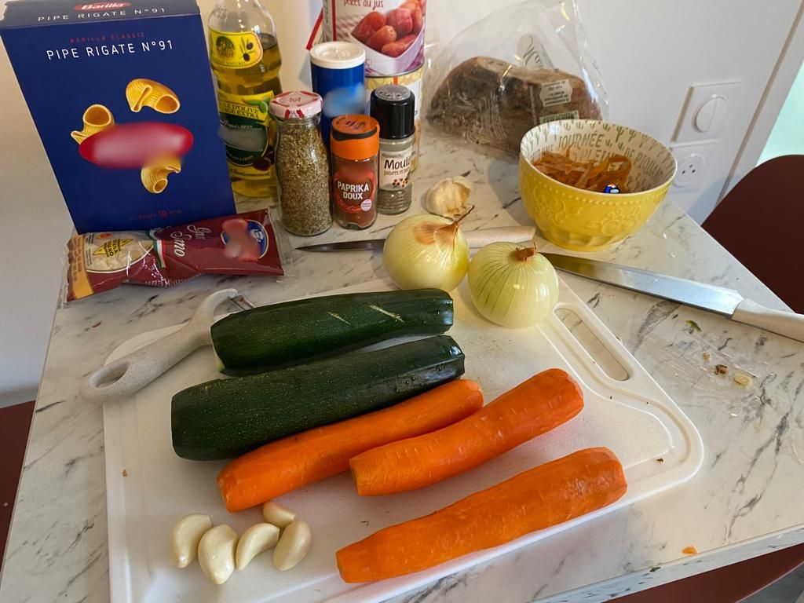
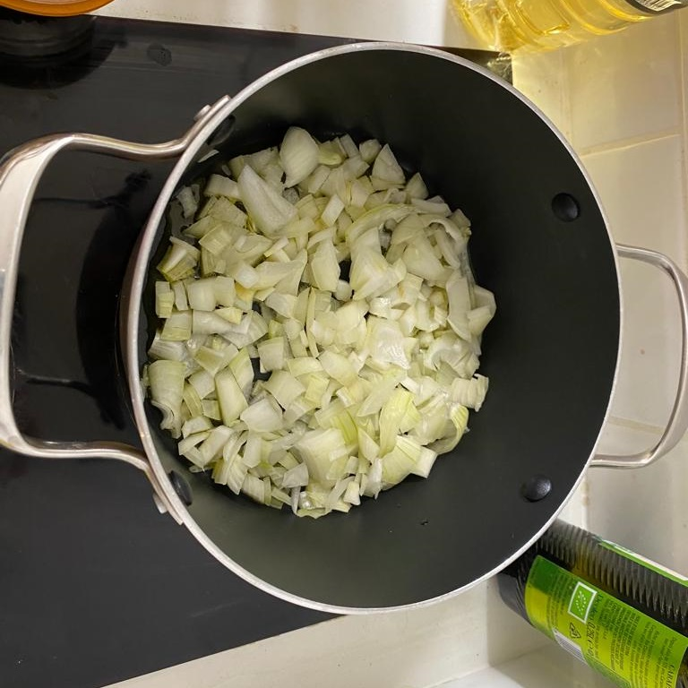
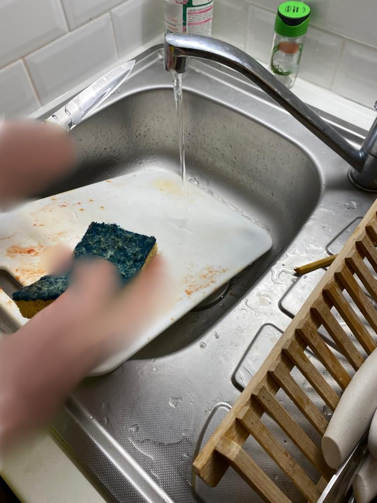

Recipe of the week
This week, we gathered to prepare an affordable recipe (sponsored article by télérat), something delicious and absolutely mouthwatering. We present to you Minestrone, an Italian soup recipe straight from Italy. When I used to live in Peru, my grandmother would make it for me every day while sharing stories of her travels to that distant land. It was during her stay in Naples that she met my grandfather, Giuseppe. The story is quite comical: he was trying to leave the country discreetly and sneaked into her suitcase when she was returning to America! He never wanted to tell us why. It will remain a mystery :D. Anyway, it was love at first sight. My grandmother told me that when she saw him, she couldn't say no. Every time I smell this soup, it brings back childhood memories for me. Like the time I lost my father in the store. A kind lady accompanied me to the customer service desk, and I was able to find my dad. We had Minestrone 4 days later.
Ingredients for 8 to 10 servings (including leftovers!):
2 zucchinis
3 carrots
2 onions
2 cans of 800g peeled or crushed tomatoes
A few garlic cloves (according to taste)
1 can of 800g white beans
500g of pasta
1 bouillon cube
Olive oil
Parmesan cheese
Seasoning (pepper, oregano)
Steps:
Prepare the ingredients.

Peel the carrots, onions, and garlic.
Dice the onions (several techniques can be found on the internet)

Put the onions in hot olive oil.
Cut the garlic in small pieces

(The people in the photo preferred to remain anonymous).

Put the rest of the vegetables, and canned tomatoes in the pot. Fill the pot with water. Let simmer for a while (for as long as you want)

Do the dishes while waiting (yes, it's important).
Add the pasta, and let it cook according to the time on the package (or taste it regularly like we all do)

When the pasta is cooked, add the white beans, and let it simmer for a few minutes.

Season to taste, and serve with parmesan cheese.

We were able to make three batches with these ingredients, and a fourth time by adding a lot of water, cream, and bouillon to the remaining soup. So, with approximately €15 worth of ingredients from Franprix (yes, you heard it right), it comes out to about €1.50 per portion!
No need to sell an arm to go to Wan or play Russian roulette at the canteen (sometimes it's good, but still...). We hope you enjoy it. We certainly had a great time with this soup. ;)